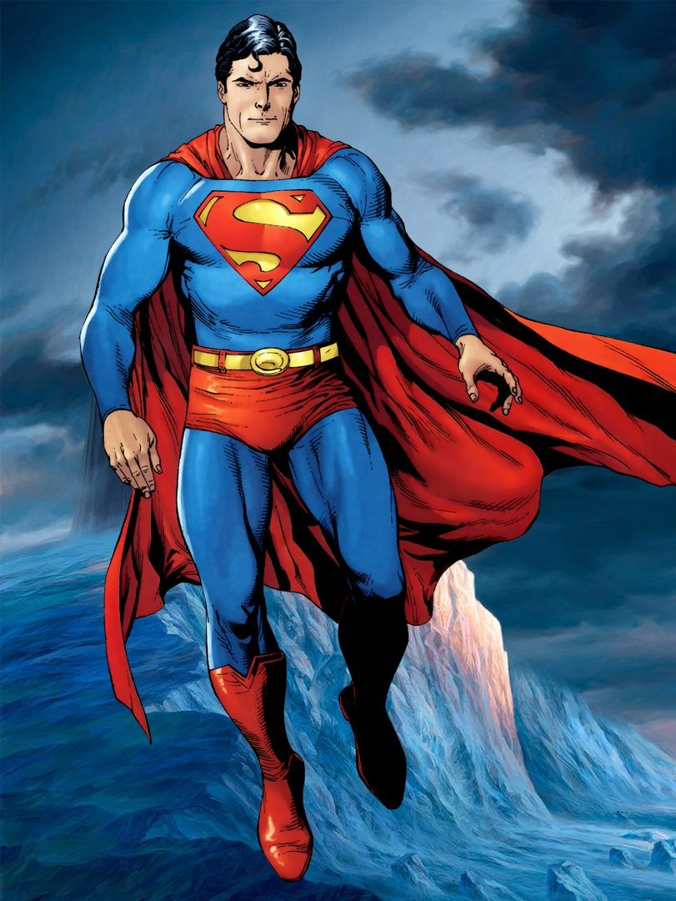

Superman
This article is about the superhero.
For other uses, see Superman (disambiguation).

Superman was born on the fictional planet Krypton with the
birth name of Kal-El. As a baby, his parents sent him to Earth
in a small spaceship shortly before Krypton was destroyed in a
natural cataclysm. His ship landed in the American countryside
near the fictional town of Smallville, Kansas. He was found
and adopted by farmers Jonathan and Martha Kent, who named
him Clark Kent. Clark began developing various superhuman
abilities, such as incredible strength and impervious skin.
His adoptive parents advised him to use his powers for
the benefit of humanity, and he decided to fight crime as
a vigilante. To protect his personal life, he changes
into a colorful costume and uses the alias "Superman"
when fighting crime. Clark resides in the fictional
American city of Metropolis, where he works as a
journalist for the Daily Planet. Superman's supporting
characters include his love interest and fellow
journalist Lois Lane, Daily Planet photographer Jimmy
Olsen, and editor-in-chief Perry White, and his enemies
include Brainiac, General Zod, and archenemy Lex Luthor.
Development
Jerry Siegel and Joe Shuster met in 1932 while attending
Glenville High School in Cleveland and bonded over their
admiration of fiction. Siegel aspired to become a writer and
Shuster aspired to become an illustrator. Siegel wrote amateur
science fiction stories, which he self-published as a
magazine called Science Fiction: The Advance Guard of Future
Civilization. His friend Shuster often provided illustrations
for his work.[3] In January 1933, Siegel published a short
story in his magazine titled "The Reign of the Superman".
The titular character is a homeless man named Bill Dunn who is
tricked by an evil scientist into consuming an experimental
drug. The drug gives Dunn the powers of mind-reading,
mind-control, and clairvoyance. He uses these powers maliciously
for profit and amusement, but then the drug wears off,
leaving him a powerless vagrant again. Shuster provided
illustrations, depicting Dunn as a bald man.[4]